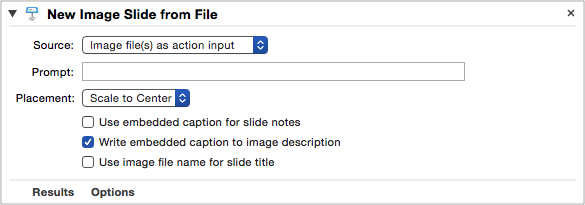
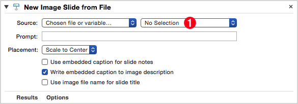
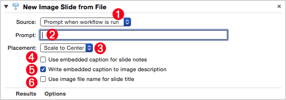
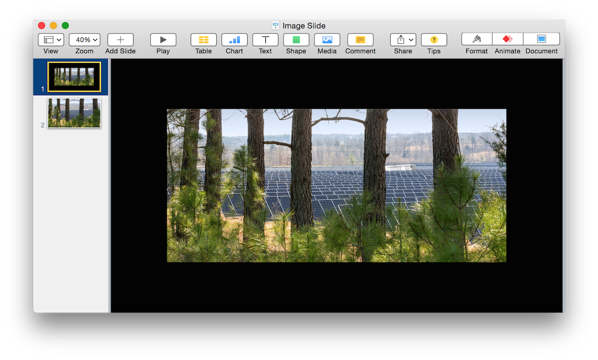
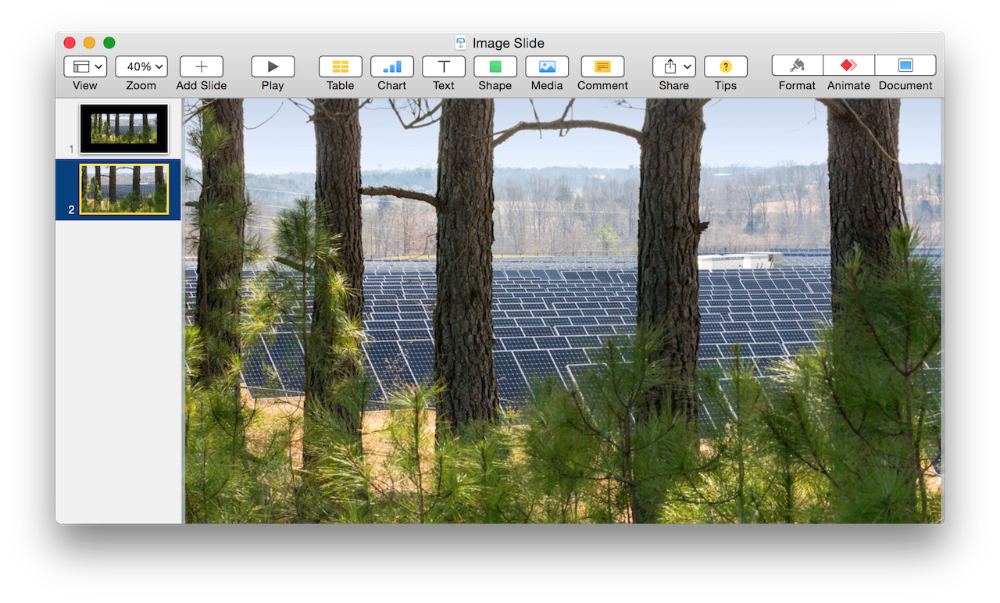

Images are an essential element of a presentation. They have the ability to convey concepts, evoke emotional responses, and can set the tone for interaction with the audience.
Adding images as individual slides to presentation is a common task, and is exactly what this Automator action is designed to accomplish.
The Action Information
| Input: | References to the image files to be used in creating new slides |
| Output: | References to the created slide(s) |
| Parameters: | User-settable parameters include:
|
| Related: | Other actions that often precede this action:
|
The Action Interface
Here is the interface view for the action, with various parameters set to specified options:
(⬇ see below ) The source parameter is set to be image files passed to the action as input.

(⬇ see below ) The source parameter is set to be a chosen file or workflow variable.

1 Choose File Popup Menu • Select the image file to be imported from this popup menu (⬇ see below ) Choose “Select Other…” to summon the standard file chooser dialog, or select “New Variable…” to create or select an Automator workflow variable

(⬇ see below ) The source parameter is set to prompt the user to choose a file when the parent workflow is executed. Note that the text input for entering the file chooser dialog prompt is now active.

1 Source Method Popup Menu • Select the method to use for determining the image file(s) to be used as input for the action.
2 Choose File Dialog Prompt • When “Prompt when workflow is run” is selected from the “Source Method Popup Menu” 1 the text input for entering the prompt for the choose dialog becomes enabled.
3 Scaling Method • Select the scaling method to use for the imported images. The options are to: scale to center, or to scale to fill (⬇ see below )
4 Use Caption for Notes • If selected, the action will attempt to extract any caption metadata embedded in the image file, and use it for the slide’s presenter notes.
5 Use Caption for Description • If selected, the action will attempt to extract any caption metadata embedded in the image file, and use it as the image’s description.
6 Use File Name for Title • If selected, the action will use the image file name as the title for the slide. The image’s file extension will be omitted.
Scaling Method
The scaling options for the imported images are to:
- scale to center
- scale to fill

(⬆ see above ) Image added to slide using the Keynote application’s default import methodology: if an image dimension is smaller than a corresponding slide dimension, then it is added at normal size; if an image dimension is greater than a corresponding slide dimension, then it is scaled to the corresponding slide dimension. The added image is centered in the window. In the example above, both dimensions of the image are smaller than their corresponding slide dimensions.
(⬇ see below ) Image added to slide using Scale to Fill method: adjust the image as needed (scale up or down) so that all the slide area is covered.

NOTE: This action is designed to create a new slide in the frontmost presentation for each of the image files passed to it as input. To perform slide formatting or editing for each of the created slides, one-at-a-time, use the looping technique demonstrated in the Dynamic Prompts example workflow.